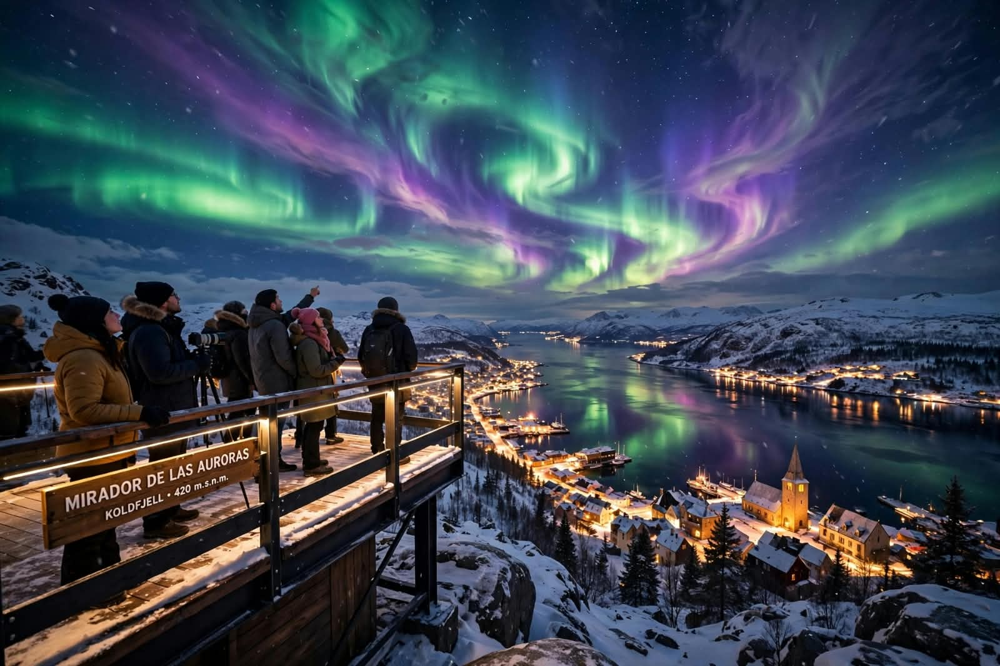
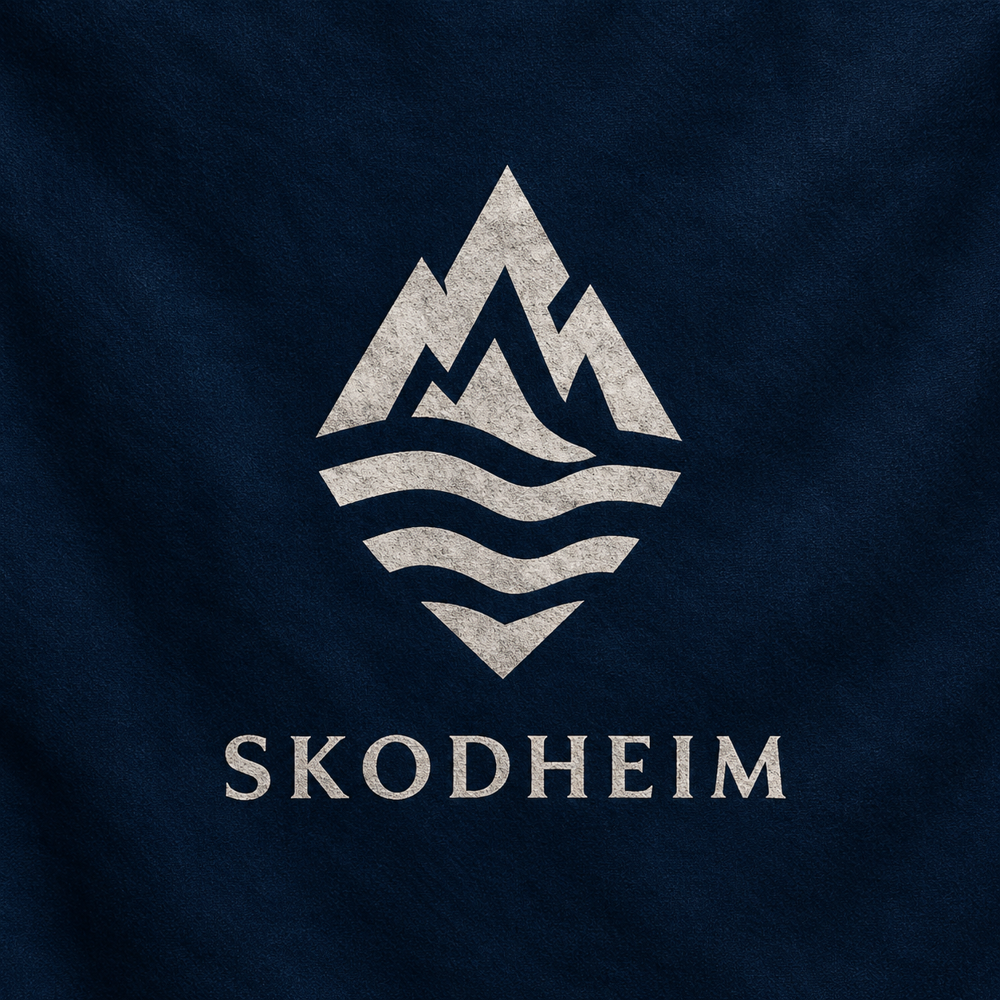
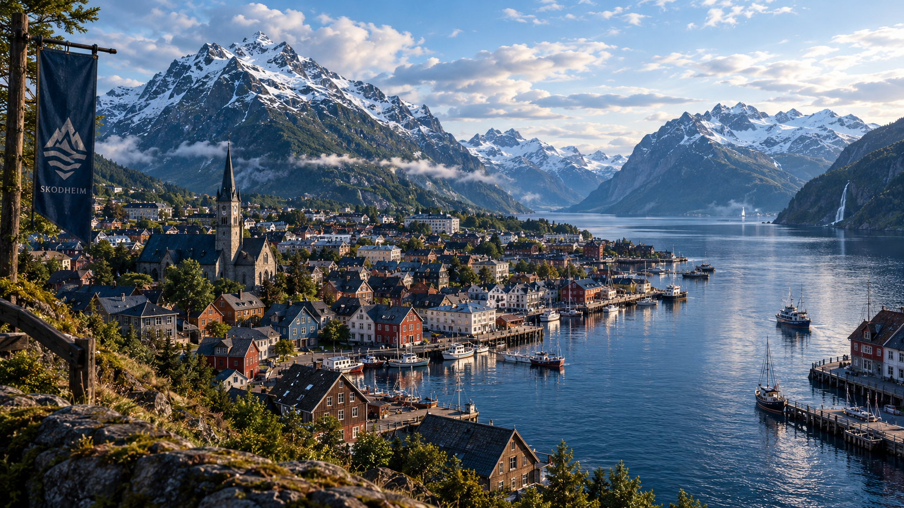
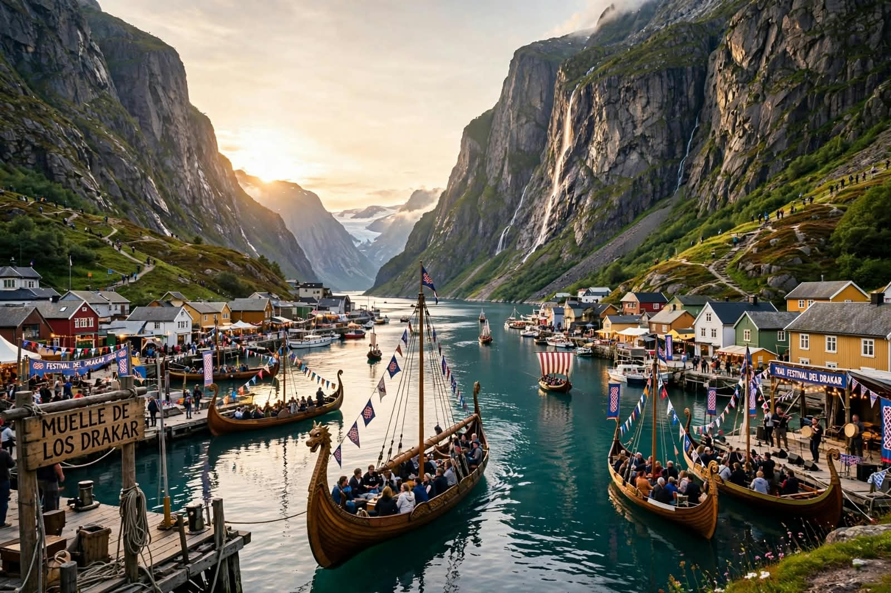
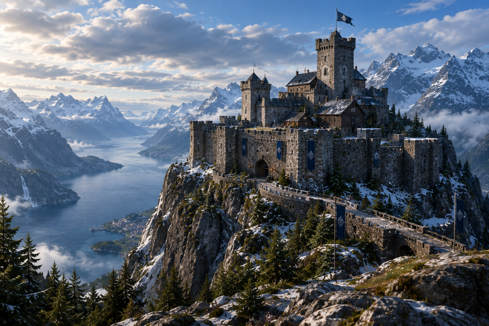

Auroras Boreales
La ciudad esta construida alrededor de un enorme fiordo de montañas. Durante el invierno, las largas noches permiten observar las espectaculares auroras boreales desde los miradores de la montaña.


Entre las frias montañas, fiordos y auroras boreales de Noruega se encuentra Skodheim, una ciudad turistica donde las antiguas tradiciones nordicas conviven con un impresionante paisaje natural. Descubri sus leyendas, recorre sus fiordos y contempla uno de los cielos mas espectaculares del norte.

La ciudad esta construida alrededor de un enorme fiordo de montañas. Durante el invierno, las largas noches permiten observar las espectaculares auroras boreales desde los miradores de la montaña.

Skodheim está rodeada por impresionantes fiordos que ofrecen paisajes naturales incomparables. Disfrutalos con tu familia en un viaje en los antiguos drakkar.

Contruida hace siglos para proteger la ciudad. La fortaleza del escudo se encuentra en lo alto de una montaña. Actualmente funciona como museo y mirador. Su museo conserva antiguos mapas, herramientas, objetos de navegacion, vestimentas tradicionales, piezas de artesania y restos arquelogicos encontrados en la region. Ademas cuenta con una sala dedicada a las leyendas nordicas y las antiguas ruinas.
